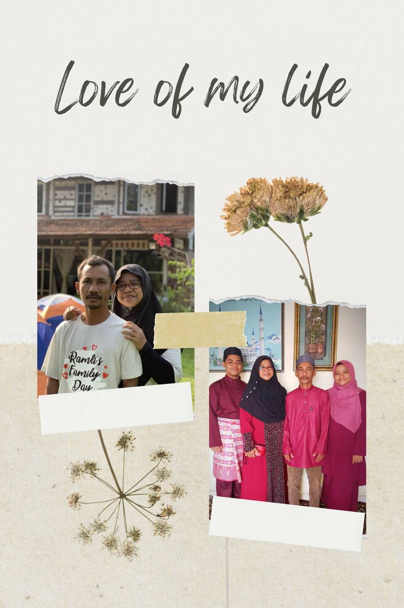

In the quiet simplicity of my life, I find joy in cherishing every fleeting moment, whether it's the warmth of a sunrise or the laughter shared with loved ones. These small, meaningful moments weave together to create a tapestry of gratitude and contentment in my journey.
I come from a small family of four, though we carry the weight of a missing piece since losing my beloved mom when I was nineteen. I often find myself wishing she were here to witness and support my educational journey, her absence a poignant reminder of her enduring love and encouragement. I wish she can send me to my university and make her proud of me.
I aspire to live my life to the fullest, embracing happiness in every moment and cultivating a deep appreciation for the precious gift of life. I believe in continuous learning and personal growth, seeking out new challenges that push me beyond my comfort zone. I hope I get all the kindness I give to others in return. I wish I spend more time with my mom.
After completing my diploma in accountancy and initially finding joy in the subject, I eventually felt my passion for accounting wane. Now pursuing a Bachelor's in Business Administration Hons. Islamic banking, I am grateful for having made the right decision to follow a path that resonates deeply with my interests and aspirations.
Baking and cooking have become my cherished passions, filling my free moments with warmth and creativity.
I embrace the excitement of experimenting with new recipes, turning each kitchen session into a culinary adventure.
Dream to build a kitchen that not only serves as a space for cooking but as a sanctuary for creativity and culinary exploration.
The art of baking enchants me, as the heavenly aromas of ingredients mingle and fill the air with comfort and delight.